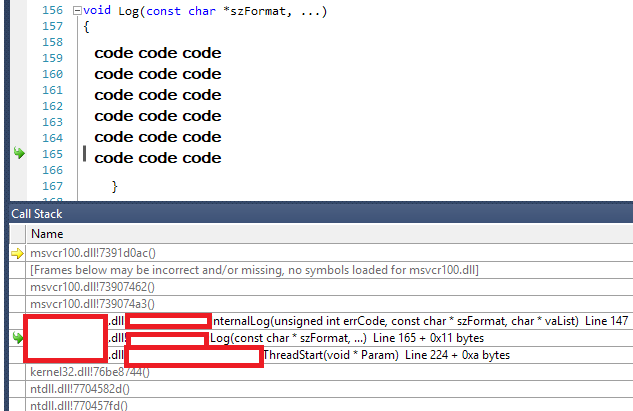
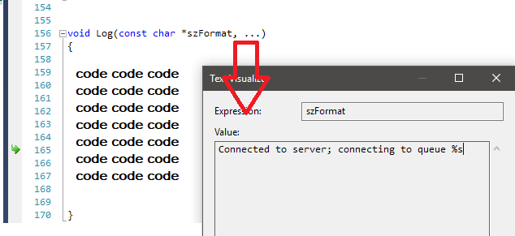

- A essência da coletividade (Dunkirk)
- A Teoria de Tudo
- Black Mirror - S04E01 - USS Calister
- Black Mirror - S04E02 - Arkangel
- Capitão Phillips
- Forrest Gump: o Contador De Histórias
- O Caçador de Pipas
- O Resgate do Soldado Ryan
- Tô Ryca!
- Corpo e Alma
- Eu, Tonya
- O Rei do Show
- A Repartição do Tempo
- A Última Missão
- A Melhor Escolha
- O Exorcista
- Dirk Gently's - Segunda Temporada
- Como Apagar o Prompt do seu Programa Windows
- Sangue Negro
- Como Achar Erros no Printf via Dump
- Sherlock: A Study in Pink
- Como Parsear Argc Argv para um map STL
- Corra!
- Dark
- Em Pedaços
- Garoojigi
- Os Meyerowitz: Família Não se Escolhe
# A essência da coletividade (Dunkirk)
Caloni, 2018-01-08 <cinemaqui> <cinema> <movies> [up] [copy]Dunkirk, filme sobre um evento histórico do diretor Christopher Nolan, simplifica a narrativa humana buscando a essência da coletividade: o que causa um grupo ser maior que a soma dos seus indivíduos? Mas simples não quer dizer simplista, e Nolan sabe muito bem disso. Ele começa apresentando um soldado francês fugindo do exército alemão em busca de resgate. Seus colegas são mortos ou feridos nas últimas jardas onde uma operação gigantesca de retirada de tropas está sendo conduzida pelos britânicos. Não demora muito para que este indivíduo se torne apenas um no meio de milhares de anônimos em busca da sobrevivência.
A precisão documental de Nolan parte então do indivíduo para o coletivo. E há vários tipos de indivíduos nessa história para ilustrar: soldados (franceses e ingleses), pilotos, capitães, almirantes, desertores, civis. Cada um precisa ganhar sua própria luta interna entre o egoísmo irracional de salvar a própria pele e o altruísmo racional, que entende que, por pior que seja para o "eu", a sobrevivência do "nós" pode depender de algumas de suas ações.
O problema que o longa tenta compreender é que esse sentimento do sacrifício pessoal pelo grupo, pontualmente patriótico e muito mais coletivo, é instável. Parte do princípio que somos fundamentalmente animais em busca de seu lugar ao sol, custe o que custar, e aos poucos tenta delinear uma espécie de mão invisível que se ergue contra o inimigo em comum. Essa mão só passa a existir quando todos trabalham em uníssono, tal como uma orquestra incidental sem regente e com muita habilidade, e como Dunkirk parece concluir, este é o verdadeiro milagre a ser contemplado em condições extremas como uma guerra.
O brilhantismo de Nolan, que também assina o roteiro, é não se focar muito no roteiro em si, mas na essência que ele tenta extrair. E a essência no cinema é obtida por pura direção, coisa que Nolan domina com maestria junto de sua equipe técnica. Dessa forma, direção de arte, som, trilha sonora, edição, atuações e fotografia trabalham mais ou menos como aquelas pessoas perdidas na praia. Elas dão o seu melhor individual pela excelência do resultado coletivo: uma obra de arte audiovisual que ultrapassa seu perfeccionismo técnico para atingir a máxima expressão de realismo em um documentário com cara de ficção.
Coitado dos que forem ao cinema aguardar pelos intrincados jogos narrativos do diretor da trilogia da justiça do homem-morcego, da metáfora em camadas de sonhos de A Origem ou das trágicas últimas consequências da rivalidade sem limites de O Grande Truque. Nada disso irão encontrar em Dunkirk. Alguns podem dizer que a história do filme nem é tão boa. E não é, mesmo. Tentando ignorar o relógio e nos remetendo excessivamente a idas e voltas em torno de um pôr-do-sol e luar eternos, o filme carrega uma complexidade que parece ter apenas o objetivo de nos fazer esquecer da ordem dos eventos e tentar nos fazer focar no peso das ações. Isso nos faz lembrar mais ainda que não há movimento orquestrado. O caos impera como nunca, e a diferença entre viver e morrer muitas vezes é apenas a posição aleatória que uma bomba cai em um píer lotado de seres humanos. Esta é a verdadeira natureza humana, e não a sensação de ordem trazida por um roteiro mais mecânico.
No entanto, há uma ordem. Ou pelo menos um tema. Isto apenas não é perceptível de imediato. A construção do filme na mente do espectador depende de sua percepção que a superação das adversidades depende basicamente da racionalidade humana em seu máximo potencial. Os soldados mais atentos se posicionam próximo da saída caso o navio afunde. O soldado francês carrega uma maca na esperança de ser resgatado mesmo não sendo inglês. O almirante abstrai vidas humanas para tentar chegar no melhor resultado a longo prazo (a guerra não é feita de apenas uma batalha). O civil, um inglês em seu próprio barco, já lutou na primeira guerra e sabe pelo som do motor distinguir caças inimigos de aliados. E o piloto aproveita ao máximo seu combustível para proteger seus companheiros.
Todas as atuações em Dunkirk, por mais famosas que sejam, se tornam anônimas pelo bem da narrativa. Dessa forma, ainda que seja acertada a decisão da figura que representa o sobrevivente anônimo ser um ator estreante (Fionn Whitehead), Mark Rylance e Tom Hardy se limitam a suas personas econômicas, sem exageros, e por isso mesmo extremamente realistas.
Rylance, personagem mais velho entre os civis, é a bússola moral da história. Sua experiência de guerra, além de tática, é assim como Churchill humanista de maneira pragmática. Ele entende os ideais de seus compatriotas, e mesmo que não entendesse, tem a marca de um filho perdido para lembrá-lo como a dor de uma guerra é universal. Suas poucas falas e muita ação tornam seu personagem o meu favorito. Ele é a síntese dos ideais de Dunkirk, mesmo que para chegar lá todos os mais jovens tenham que falhar onde Rylance mal se dobra.
No entanto, apenas o personagem de Tom Hardy poderia trazer também energia à empreitada. E isso ele faz com uma entrega não apenas louvável, mas inteligente, habilidosa e carismática. Ele pode ser o personagem favorito dos mais jovens, que irão se sentir salvando o dia e ainda mantendo uma quantidade invejável de testosterona.
Por fim, o soldado francês de Whitehead, Tommy, não é um herói anônimo, mas um fracassado notório. A função dos britânicos também era salvar os franceses das garras do inimigo, mas aparentemente os franceses são incompetentes demais até para serem salvos. O francês de ontem é representado como o francês padrão de hoje, por um homem fraco, covarde, que não honra suas calças e permite que façam o que quiserem com sua terra. E isso não é ruim para a história, mas necessário. É da natureza humana salvar os mais fracos para o bem coletivo. O soldado francês, portanto, é a versão mais realista possível em um relato de guerra do clichê da donzela em perigo.
Todas as ações em Dunkirk são momentos de tirar o fôlego. Isso porque a sua edição de som nos permite acompanhar cada evento com precisão, desde a queda de cartucho de um tiro até os motores falhando de um caça. A trilha sonora de Hanz Zimmer se encaixa como uma luva em um épico de guerra. Zimmer sempre é barulhento e pertinente e aqui ele faz o trabalho de sua vida. Sabemos que é ele pela repetição de temas anteriores (trilogia do Morcego e A Origem), mas aqui o filme praticamente implora por mais Zimmer.
Todo esse hino dramático se potencializa por um filme que exibe uma fotografia hiperrealista de Hoyte Van Hoytema (Ela). É como aquelas fotos coloridas da época (originais ou atualizadas), onde ainda se mantém a aura documental com cores não tão fortes, mas precisas, eternas. A filmagem em 70mm e a decisão de filmagens reais de caças tornou a experiência tão impressionante que fica difícil desassociar o real do imaginado. A arte imita a vida em uníssono com a atmosfera eternizada de Dunkirk.
Este é um filme cheio de ideais. Mas como tudo na melhor sétima arte, esses ideais não são verbalizados, mas sentidos ao vermos a ação acontecendo. E quanto mais perfeita a ação mais forte a mensagem. Tal qual os melhores momentos de Eisenstein, Dunkirk é menos sobre conflito é mais sobre natureza humana. No caso o filme de guerra de 2017.
# A Teoria de Tudo
Caloni, 2018-01-11 <cinema> <movies> [up] [copy]Não dá para dizer que o novo filme de James Marsh, que ganhou o Oscar pelo excepcional O Equilibrista e teve seu Projeto Nim rodando os festivais do mundo e ganhando prêmios, faz qualquer injustiça à vida de Stephen Hawking, o brilhante físico teórico que foi acometido por uma doença neuro-motora desde quando jovem, mas mesmo assim conseguiu dar progresso não apenas à sua vida profissional como pessoal. Nem podemos dizer que o ator Eddie Redmayne (Os Miseráveis) faz um mal trabalho retratando o cientista. Porém, há uma maldição que rondar toda cinebiografia de pessoas que ainda vivem: o endeusamento de um ícone acaba desumanizando o personagem, o tornando uma mera sombra de um indivíduo (o mesmo pondendo ser dito de sua esposa, cujo livro foi a base para este filme), indivíduo este que para se tornar a figura famosa e amada com certeza teria muito mais facetas que justamente os fãs gostariam de conhecer.
No entanto, o filme se resume em narrar burocraticamente o período da vida de Stephen quando estava se formando em Cambridge e conhece sua futura esposa e passam a ter uma vida de casados após ele descobrir que teria pouco tempo de vida devido à doença já citada. Burocraticamente por não tentar construir qualquer coisa além disso, o que já o torna emocionante em alguns momentos, mas nunca empolgante ou instigante. Não há qualquer relação entre a vida do físico e a vida do pai de três filhos preso à cadeira de rodas. Mas há um questionamento bobo a respeito da não-religiosidade de Hawking e seu destino pouco gentil com sua pessoa.
O que, convenhamos, ocupa tempo demais em tela para uma vida disposta a quebrar conceitos estabelecidos décadas atrás pela ciência. E a própria caracterização da ciência no longa carece de sutileza em simplificações e momentos catárticos inevitáveis, mas forçados. De qualquer forma, não deixa de ser notável a maneira com que o filme exibe o preconceito inicial da comunidade científica frente a novas ideias como a Radiação Hawking. Também não deixa de ser emocionante o momento que Hawking decide escrever seu primeiro livro.
O drama também é competente em dar contorno à figura teoricamente multifacetada da esposa. E teoricamente é a palavra porque, apesar dos notáveis e admiráveis esforços de Felicity Jones, sua Jane Hawking permanece um mistério do começo ao final do filme. E seu relacionamento com o professor do coro da igreja local soa desculpável demais (mais um sintoma de biografias de gente viva).
Dito isto, não há como notar Eddie Redmayne se remexendo todo e demonstrando com uma passagem do tempo admirável todo o longo e doloroso processo pelo qual Hawking foi descobrindo que sua morte não viria tão cedo, e sua vida não continuaria tão fácil. Redmayne consegue manter a figura do físico teórico intacta, mas é incapaz de acrescentar algo além do gênio de cadeira de rodas e voz metálica.
Frustrante por nunca conseguir lançar asas para seus interessantíssimos personagens, A Teoria de Tudo, assim como a teoria que leva o nome, se assemelha à própria teoria sonhada por Hawking, Einstein e tantos outros: incompleta, ainda que supostamente elegante.
# Black Mirror - S04E01 - USS Calister
Caloni, 2018-01-12 <cinema> <series> [up] [copy]A quarta temporada de Black Mirror começa razoavelmente bem, mas dá sinais de cansaço. A ideia de brincar com Star Trek, vinda de autores obviamente fascinados por séries como essa e Além da Imaginação (há uma brincadeira igualmente inventiva no último episódio dessa temporada) deram origem ao terror estelar de simulação que irá nos mostrar que a série começa a abusar dos conceitos de simulação (jogos ou não) e em alguns momentos as ideias no papel (como ideia e argumento) não foram tão bem conduzidas.
Tome esta primeira história. Ela se passa basicamente explorando a mente doentia de um desenvolvedor de software brilhante mas acuado socialmente. Não ganhando o respeito de quase nenhum dos seus funcionários mesmo tendo criado o jogo de simulação mais imersivo de todos os tempos, ele vai capturando suas versões digitais e os mantendo em uma versão do jogo onde ele é o capitão de uma nave interestelar baseado em sua série favorita e onde ninguém pode desobedecê-lo. Ele é o Capitão Kirk distorcido dessa realidade, e todos os outros coadjuvantes em uma versão subversiva de Star Trek onde o maior castigo é ninguém conseguir morrer.
O surgimento de um interesse amoroso é o que faz a história se mover, mas mais para o lado entretenimento e comédia do que drama. As tiradas e os diálogos são eficientes e engraçados, mas isso tira a dramaticidade da narrativa, o que nem sempre é uma coisa boa. Com uma conclusão boba que utiliza ganchos completamente alheios à realidade (onde uma funcionária invade a casa de seu chefe porque foi chantageada com fotos de... biquini?), as regras do jogo dessa simulação também não são claras, e mudam à conveniência do roteiro. Divertido, mas esquecível.
# Black Mirror - S04E02 - Arkangel
Caloni, 2018-01-12 <cinema> <series> [up] [copy]Talvez a história mais fraca de toda a série Black Mirror, Arkangel é o segundo capítulo da quarta temporada e fala sobre a relação entre mãe e filha. A mãe sofre um trauma no parto da filha e em quase perdê-la em um parque. Isso é o suficiente para que ela tenha incapacidade de comunicação com sua filha e utilize um mecanismo de monitoração extremamente controverso: ver e ouvir o que sua filha está fazendo.
Black Mirror sempre foi uma série que desenvolveu uma ideia até as últimas consequências, mas aqui a série pretende ser mais reflexiva e tendo uma mini-missão de conscientização para pais: fale com seus filhos. Não os monitore como psicopatas voyeur.
A parte mais interessante dessa história é como evitar que uma pessoa passe pelos medos e choques de realidade necessários para seu desenvolvimento ironicamente torna essa pessoa imune a... humanidade.
É particularmente interessante também como a passagem no tempo, feita através da menina passando pela cerca onde se encontra um cachorro temido por ela desde sempre. As decisões de direção e edição na série continuam em alta mesmo a serviço de roteiros que talvez não devessem sair tão cedo do papel.
# Capitão Phillips
Caloni, 2018-01-12 <cinema> <movies> [up] [copy]Este é um filme tenso. Bem tenso. Ele começa já tenso. Daí ele caminha para algo mais tenso ainda. O realismo do filme de Paul Greengrass (O Ultimato Bourne) remete diretamente à história real que ocorreu com o real Capitão Phillips. Tom Hanks está em um papel ingrato para ele, mas ainda assim faz muito e bonito. Ele é um capitão carismático, que tenta salvar sua tripulação de piratas somalianos que abordam seu navio. Ele tenta negociar de todo jeito, e alguns momentos, quando o longa começa a perder um pouco o ritmo, ele é retomado novamente graças às expressões, à forma de agir e de falar do personagem capturado por Hanks. E apenas isso já é digno de assisti-lo.
Mas além disso há aí um filme didático de como funciona quando um crime é cometido em águas internacionais. Toda a mobilização da marinha americana é vista por todos os ângulos. Vemos SEALs embarcando em uma missão a jato, vemos pesquisas sobre os piratas sendo feitas em tempo real para conseguir alguma vantagem estratégica. Vemos a maneira sagaz que Phillips consegue passar informações para seus salvadores mesmo não podendo fazer absolutamente nada.
Este não e um filme que utiliza mecanismos no roteiro onde o sequestrado vai aos poucos ganhando alguma confiança de algum de seus sequestradores e aos poucos consegue uma chance de escapar. O roteiro de Billy Ray auxiliado pelo relato em livro do próprio Richard Phillips e o escritor Stephan Talty prefere se manter sóbrio para não perder o fio da realidade que nos acompanha do começo ao fim. É um fio tênue, que pode se partir às vezes, mas isso nunca acontece graças às idas e vindas do drama e da tensão crescentes.
Vencidos pelo cansaço, espectadores desse filme com certeza sairão mais tensos do que chegaram. E isso porque as câmeras de Greengrass não pararam por nenhum minuto, e os cortes frenéticos do editor Christopher Rouse consegue capturar a ação sem nunca deixá-la morna. Está sempre fervendo, e o tempo passa cada vez mais rápido. Um trabalho correto do começo ao fim com ótimas atuações.
# Forrest Gump: o Contador De Histórias
Caloni, 2018-01-12 <cinema> <movies> [up] [copy]Difícil não sonhar com este filme. Ele é a síntese da história americana unida com a síntese do seu próprio espírito. Forrest Gump é tudo o que um ser humano médio nunca conseguirá ser, ainda que seu QI seja muito superior ao de Forrest. O que falta em nós e sobra em Forrest é ação. O que sobra em nós e falta em Forrest é o intelecto fruto dos sonhos vazios e incompletos de nossa existência. Dessa forma, Forrest é um ser humano completo como muitos nunca chegarão a sonhar ser.
É claro que estamos falando de uma lenda. Ele nunca existiu, assim como nunca foi condecorado duas vezes na Casa Branca, ou conheceu John Lennon em um programa de entrevistas, ou investiu no mercado de camarões ou na promissora Apple. Nada do que Forrest fez existiu, assim como quase nada que nós pensamos sobre nossas próprias vidas, pessoas de QI médio, foi realizado de fato. Nossa imaginação é mil vezes mais ativa que nosso próprio corpo. É por isso que Forrest existe em nossos sonhos. E sempre existirá. É a lenda do americano que foi lá e fez. Tudo.
E por algum motivo o roteirista Eric Roth sente necessidade de inserir romance como a base de tudo. O amor de Forrest pela inalcançável Jenny (Robin Wright, mulher do congressista Frank Underwood em House of Cards). Jenny é linda e inquieta. Talvez ela seja inalcançável por ela mesma. Abusada pelo seu pai, sua vida é torta e cheia de percalços. Mas Jenny não realizou nada. Ela é fruto de adoração de uma lenda, e vai entender isso só muito tempo depois.
Consideremos Tom Hanks. Ele é Forrest Gump na vida real. Ele não é muito inteligente, mas um ótimo ator e gente boa. Ele é o cidadão médio que paga seus impostos e ajuda velhinhas quando precisa. O camarada da Academia, ganhador de não-sei-quantos Oscars. Ele é um ator que chega e faz. Alguns resultados deixam a desejar, mas olhe para a fileira de personagens interessantes que ele já interpretou. Ele é Forrest Gump em carne e osso.
Talvez Forrest Gump não agrade os pé-no-chão. Mas peço que pense por um instante. Eu sou um pé-no-chão, também, mas entendo quando um filme quer me fazer voar. Nem que seja um pouco. Através desse voo ele irá me mostrar as maravilhas da imaginação. E, melhor ainda, o quanto podemos alcançar se deixarmos essa imaginação de lado. O quão realista isso soa para você?
# O Caçador de Pipas
Caloni, 2018-01-12 <cinema> <movies> [up] [copy]Eu não li este livro. E nem preciso. O Caçador de Pipas é romance ficcional puro, adaptado da maneira mais eloquente e visual jamais vista. Uma história que é uma longa sequência, que passa por décadas e diferentes cenários, personagens, situações. Com o pouco que o filme apresenta ele se torna complexo o suficiente para nos fazer prender a atenção pela história do jovem Amir como o própro Amir prendia a atenção de seu servo e amigo Hassan contando uma das mil e uma histórias de seu livro. A essência de contar história está na essência deste filme. E é por isso que ele é tão bom. Ele segue um fluxo literário em forma de cinema, apresentando detalhes que marcam a cada momento e são retornados no momento propício. Quando chega o terceiro ato nos lembramos como se tivéssemos acabado de ver o final da amizade desses dois, e como a vida segue longos arcos que, se Deus permitisse, gostaríamos de fechar antes de partir.
Talvez você adquira o seu personagem favorito dessa história. Provavelmente é Hassan, uma criança adorável que segue tão fortemente os ensinamentos do seu pai, também servo da família, que é tocante sua lealdade tanto quanto Sam era para Frodo em Senhor dos Anéis (mas aqui, estranhamente, sem nenhum cunho homossexual).
Amir já não está tão certo de quem é. Ele sofre um trauma por conta de um trauma muito maior sofrido pelo amigo. Seu pai, Omar, é interpretado pelo desconhecido Sayed Jafar Masihullah Gharibzada com uma potência moral tocante. Ele também segue seus valores de maneira incondicional, e se torna cada vez mais meu personagem favorito. Ele possui ideias simples, apesar de rico. E possui fibra moral. Seu momento de dentro de um caminhão em fuga abordado é tão forte que serve para Amir uma década depois.
O Caçador de Pipas é um filme sobre muitas coisas. Mas, principalmente, sobre contar histórias com primazia. E conseguir adaptar romances já deveria valer um prêmio de imediato. Agora, transformá-lo em algo mais, em arte audiovisual, é digno de memórias afetivas poderosas. Tal como uma história bem contada.
# O Resgate do Soldado Ryan
Caloni, 2018-01-12 <cinema> <movies> [up] [copy]Aquele filme que tem tudo pra dar errado, mas que por uma série de milagres se torna uma obra de arte. A farofa de Steven Spielberg aliada a um roteiro marcado por momentos que sintetizam o sentimento contraditório da guerra pelos olhos de seus soldados. E uma frase que marca o cinema de guerra: "cada pessoa que eu mato parece me levar cada vez mais longe de casa".
Após o dia D, os americanos precisam ganhar terreno, mas um gosto amargo na boca de seus líderes permanece: milhares de jovens mortos e famílias que nunca mais serão as mesmas. Na esperança de salvar o quarto filho enviado para se sacrificar, a missão inusitada de resgatar um soldado de infantaria em meio ao caos surge como apenas mais uma insanidade das inúmeras que aparecem em tempos sombrios.
O apelo aqui é histórico e pomposo: recompensar a nação pelas carnificinas anteriores. O símbolo é uma carta escrita de próprio punho de Abraham Lincoln se desculpando pela perda dos filhos de uma mãe patriota durante a guerra de secessão. O objetivo é evitar a todo custo perderem-se os valores americanos de vida e liberdade. Comovente para americanos e sensível para o resto da humanidade.
Este é o quarto Ryan que pode ser perdido. O nome Ryan vira sinônimo de soldado anônimo. Ele é um jovem que deverá ser salvo por uma tropa liderada por um capitão que era professor de colégio. Imagine você agora essa metáfora. Não é a última. Metáforas são úteis durante todo o percurso, onde até um pai francês tentando salvar sua filha caçula, além de ser uma cena clichê, pode conter uma mensagem poderosa.
Esta tropa é formada pelos atores perfeitos para o papel. Não é possível falar muito sobre eles no filme da mesma forma que em uma guerra relâmpago mal conhecemos nossos colegas exceto pelas ações de cada novo dia. A morte iminente transforma cada um deles em símbolo de resiliência, cada um de uma maneira peculiar. Suas faces dizem muito sobre cada um. Suas expressões e trejeitos explicam suas ações. E por mais perfeita que se saia esta tropa, há um ar de melancolia os cercando. Parece que vem dos prédios em ruínas.
Há cenas de batalha em planos-sequência, câmera na mão, edição perfeccionista aliada a uma primorosa edição de som. Tudo isso compõe o deleite técnico da ação, que é memorável per se e ganha aliados dos fãs de filmes de guerra realistas e viscerais. Parece não haver o que reclamar da produção deste filme. Apenas o que aclamar.
Contudo, as cenas que dialogam com a alma são as mais simples, com a câmera parada, estática, a respirar e refletir o momento. É o rapaz traduzindo a letra de uma música cantada por Edith Piaf saindo de um gramofone colocado em cima de um dos poucos muros de pé em uma escadaria imponente. Lá estão os meninos a observar. A letra fala de amor. O mesmo amor que é intraduzível quando o caos do ódio toma as rédeas do poder. Uma síntese política e idealista em uma única cena. Eis porque os milagres desse filme são sobrenaturais.
# Tô Ryca!
Caloni, 2018-01-12 <cinema> <movies> [up] [copy]Selminha, ou Samantha Schmütz, faz aqui a pobretona padrão brasileira que mora no morro do Rio de Janeiro com sua amiga inseparável e igualmente quebrada Luane. Ambas com nome de pobre (e Selminha é de fato o nome dela, de RG) e sem muitas perspectivas de vida, ambas trabalham como frentista e são obrigadas a passar os perrengues do dia-a-dia de todo pobre: condução lotada, peguetes que não querem saber de compromisso e tudo o que você pode imaginar que os roteiristas Fil Braz e Vitor Brandt inspiradamente obteram do cotidiano padrão brasileiro, ligeiramente pintado como novela global.
Mas a atriz que faz Selminha não permite o disparate de a tornar uma caricatura à toa. A atriz Samantha Schmütz é eficiente no sentido de construir uma persona que pode participar de outras histórias e representar a pobretona brega e feia. Ela faz imitações guturais de pobre, se indigna como pobre. Ela confessa que rouba papel higiênico do trabalho como vingança (e coloca farofa no prato sem pesar no self-service). Ela está carregada de persona, e mesmo que estereotipada até as pontas desfiadas do seu cabelo, ela não se rende, esgotando sua energia a todo custo.
A história é clichê, sem sentido, manipuladora e com lição de moral. Ignore-a se conseguir e foque em Selminha. Mas apenas um início: ela ganha uma herança de um parente distante (com direito a pet no leito de morte e vídeo bem produzido demais para ser real) que bate as botas e coloca uma regra bizarra em cima de sua fortuna: para Selminha obtê-la ela terá que consumir sem acumular 30 milhões de reais em um mês. Cerca de um milhão por dia. E ela não pode comprar nada, doar e jogar quase nada. Se ganhar fica com centenas de milhões. Se perder, fica como veio ao mundo (ligeiramente mais, pois de roupas).
O resultado é uma gastança brega, divertidinha e com alguns percalços imaginários. Há a trupe de advogados sisudos estilo mafiosos que por algum motivo desejam que Selminha não vença. Há seu secretário que é comprado por um cargo na empresa desses advogados (em vez de parte na fortuna). Há, claro, um dilema em não poder ajudar sua melhor amiga mesmo tendo o dinheiro (e não podendo contar para ninguém sobre o jogo; mais uma regra bizarra da herança bizarra).
Presa a um videogame primário, ela decide no terceiro ato se candidatar a prefeita do Rio para assim torrar toda sua grana em uma campanha. Por que não fez isso antes, e por que o secretário dela está tão empolgado com a campanha, já que ela é apenas para torrar grana? Eu não sei, e provavelmente o espectador nunca saberá. Resultado: nunca saberemos.
# Corpo e Alma
Caloni, 2018-01-13 <mostrasp> <cinema> <movies> [up] [copy]Corpo e Alma possui um lindo pano de fundo: ele observa a humanidade em alces, bois e humanos. A primeira cena é em uma floresta intocada, com dois cervos. Observamos seus olhares e seus movimentos. Há um lago paradisíaco e um filete de água que se esvai como se fosse infinito. Em um dado momento, um alce coloca sua cabeça sobre as costas do outro. Há uma comunicação invisível ali. Mas humana. Esse é o sentido deste longa.
Corta para o abatedouro. Cenas fortes. Bem fortes. Bois são abatidos mecanicamente. Suas partes são separadas e penduradas. Há sangue. Muito sangue. Antes disso observávamos o mesmo olhar dos bovinos visto nos alces. E ao mesmo tempo em um humano. Ele observa da janela e sente o sol encostar em sua pele. O bovino também. No pátio, uma recém-chegada foge do sol. Ela tem problemas de comunicação e de viver.
O filme escrito e dirigido por Ildikó Enyedi ganhou o Festival de Berlim. O tema da comunicação impossível entre nós, humanos, é estendido agora para nossos parentes mais próximos: mamíferos. Aqui vemos ruminantes. Os alces possuem vida curta, cerca de 20 anos. Nós, humanos, cerca de 80. Mas qual o valor de uma vida não-vivida?
A rotina do abatedouro e seu refeitório acaba se tornando palco de uma comunicação inusitada entre o humano e a humana que observávamos agora há pouco. Eles são o diretor financeiro e a novata naquela fábrica. Ela é isolada pelo seu autismo. Ele pega seu braço paralisado. Ambos, muito lentamente, vão desenvolvendo uma relação amorosa inusitada, enquanto um roubo inusitado do "pó do amor" para os bovinos vai sendo desenvolvido em uma investigação psicológica.
As pontas de Corpo e Alma nunca são presas o suficiente para que seu tema fique claro. Ele é sutil demais para nos manter atentos ou nos entregar algo marcante. Porém, sua leveza frente a cenas fortes é arrebatadora. Quase poética. Uma versão espiritual de Boy Meets Girl sem ter muito o que desenvolver. Se trata apenas de olhar e experenciar.
O proprio gênero oscila atrapalhadamente entre o humor e o drama. A menina é autista e seus problemas de comunicação podem ser vistos como engraçados, apesar de dramáticos. Fica um ponto de interrogação toda hora. O público fica em dúvida. O filme fica em dúvida. O filme está com o vidro embaçado, apesar de lindo e apesar de sereno.
Sangue e olhares se misturam em uma poesia contada em prosa, tão sutil que esqueci sobre o que se trata.
# Eu, Tonya
Caloni, 2018-01-13 <cinemaqui> <cinema> <movies> [up] [copy]Para quem gosta de biografias que contam a história de esportistas com uma infância difícil, uma carreira rodeada de percalços, uma dose sadia de ironia, um final tragicômico e uma trilha sonora com os hits da época, então "Eu, Tonya" talvez seja para você o filme do ano. Do início, pelo menos.
Ambientado entre as décadas de 80 e 90, a história real de Tonya Harding, a primeira patinadora a fazer uma espécie de salto triplo no gelo de costas, é marcada profundamente pelos seus traços culturais norte-americanos. Nas palavras de sua ex-treinadora, o que ninguém pode negar é que Tonya é "muito americana". E por americana ela quis dizer a típica família caipira "red neck" estadounidense, com direito a saber desde criança a atirar em coelhos, cortar lenha e se esforçar ao máximo em seu sonho: patinar no gelo.
Com uma mãe insuportável que suporta seu sonho (Allison Janney, ácida e meio irritante), ela teve que ser criada com ela na base de tapas e abuso psicológico. Ela nunca recebe um elogio de sua mãe, que acredita que diminuí-la é um incentivo para que ela dê seu melhor. A questão é que, por bem ou por mal, Tonya se torna uma exímia patinadora e muito acima da média de suas colegas.
Mas isso não é suficiente. Existem valores tradicionais pudicos de família que impedem que ela, apesar de realizar as manobras mais ousadas no gelo, ganhe o reconhecimento do júri. Este filme é parte crítica social, mas apenas um pouquinho. Não fica sequer muito claro a relação entre as roupas de dança confeccionadas por ela mesma significam para um grupo de jurados basicamente invisível. E o resto da história se torna um drama bem-humorado, já que hoje em dia o que resta é rir dos costumes selvagens daquela época (ainda que saibamos que não se trata de um comportamento já superado em todos os lugares).
Mas esta também é uma comédia de confusões, uma versão (bem) light de Fargo, com direito, de acordo com o repórter de uma revista de caráter duvidoso, a uma história "cheia de idiotas". E, acreditem, no meio dela acharemos pessoas mais idiotas ainda. O que chega a trazer a inquietação que o filme quer transmitir ao espectador de que não importa o quanto Tonya seja habilidosa no que faz, o mundo inteiro está interessado mais em seus próprios umbigos.
O roteiro de Steven Rogers consegue se sair muito bem em sua estrutura geral, onde começamos com uma série de entrevistas feitas em uma resolução de tela de TV, lembrando de onde vinham os holofotes. Enquanto vemos estas pessoas comentando sobre o passado aos poucos percebemos que suas próprias versões do passado complementando a narrativa, olhando para a câmera e quebrando a quarta parede pelo economia de cortes. Funciona. Já, por outro lado, a insistência em remoer a relação conturbada com a mãe e o namorado/marido acaba por soar repetitiva e cansativa, pois a história nunca sai do lugar por conta de mas um episódio, por exemplo, do arranca-rabos habitual do casal.
Margot Robbie faz aqui um papel que valoriza sua interpretação no jeito caipira de falar. As suas reações são exageradas e automáticas. Sua Tonya de fato é uma pessoa simples e determinada. Mas não tem alma. Ela segue um fluxo ininterrupto de eventos. Seu jeito de se expressar é na base de diálogos simples, brutos e diretos. Ou na base da violência, a linguagem que aprendeu nas vidas em família e de casada e que a acompanha por toda a vida.
A direção de Craig Gillespie não chega a ser nada original. Enjaulado na estrutura de Rogers, o detalhe mais marcante é ver Tonya no gelo. A câmera oscila de maneira competente entre os olhos e as pernas da patinadora, e sem que consigamos perceber o truque lá está Margot Robbie efetuando movimentos arriscados e precisos no gelo. Seus giros finais com a câmera girando em torno dela com o público ao fundo vão se tornando mais e mais repetitivos. Não há muita emoção nesse esporte, mas Gillespie extrai o suficiente para nos emocionar.
Isso aliado a uma trilha sonora que oferece mais hits da época que o necessário. São músicas que marcam uma mini-época. Claro que "Devil Woman" faz todo o sentido do mundo, mas o que "Barracuda" tem a oferecer em um momento específico da vida de Tonya? Pouco. E o fato dos capangas de seu "guarda-costas" gostarem de ouvir o batido single "Gloria"? Pouco também. E aos poucos vamos vendo que as músicas selecionadas para a história são uma mera distração nostálgica que ao menos nos fornece a textura do tempo para embarcarmos em uma viagem de algumas décadas atrás.
Mais inventivo é a direção de arte, e mais ainda é o figurino, que reconstroi as roupas de apresentação que a própria Tonya fazia, e consegue manter uma distância incômoda entre o que ela está vestindo e o que é esperado que ela vista. Suas lantejoulas, brilhos e cores exageradas oferecem uma comicidade incidental, e mesmo que o filme prefira não chamar tanto a atenção para este fato, não há como ignorar os tons aurinegros que Tonya usava, dignos de um "red neck" no seu sentido mais puro (a Bandeira de Gadsden, símbolo das colônias americanas idealizado por um dos Founding Fathers).
Alguns desses detalhes no filme são uma recompensa agradável em um filme que não voa muito alto, mas consegue se manter em uma boa altura por tempo suficiente para estar acima da média. E se você gostar de finais tragicômico com hits de sucesso pipocando, este ainda pode ser o seu filme do ano.
# O Rei do Show
Caloni, 2018-01-14 <cinema> <movies> [up] [copy]O Rei do Show já foi formatado para ser de fato um show. Na broadway. Todos os elementos permanecem em cena. De repente um grupo começa a cantar (de novo! e de novo!) e eles participam de todos os cenários e grupos no palco na mesma canção. O show que está sendo celebrado é o da própria vida. Os números de dança não privilegiam ninguém em específico. Todos possuem igual importância no quadro. Tal qual a vida. Estamos todos aqui, na mesma pedra rochosa orbitando uma estrela média e onde as pessoas ainda têm medo e raiva do diferente. Só nos resta cantar em vez de falar. Não porque estamos em um musical, mas porque essa é a maneira de espantar o lado sombrio de nossa existência.
Este filme do estreante Michael Gracey segue um roteiro delirante escrito por duas pessoas fora da sua área de conforto: o produtor da série Sex and the City e o diretor de Crepúsculo - Amanhecer. A história é aquele clichezão do garoto pobre que constrói sua própria sorte e corre atrás da garota que ama e do seu grande sonho: se tornar alguém importante nos holofotes. Ele fabrica então seu espetáculo abraçando o que todos ignoram, incluindo suas próprias famílias: humanos com uma ou outra deficiência. Um anão, uma mulher barbada, um homem extremamente alto, outro extremamente gordo e por aí vai.
A produção deste filme é impressionante. As cores vibram, as luzes estão nos lugares certos e há ação a todo momento, mas enquadramentos muito loucos nos fazem perder o fio da meada e não conseguir ver direito o que está acontecendo. Mas tanta coisa acontece que isso não importa. Não há nenhuma sequência memorável neste filme, mas há muitos quadros que vez ou outra estão muito mais certos do que o conjunto da obra. E quando isso está cercado de boas músicas com bons intérpretes o emocional fala mais alto.
Não que o grupo de atores seja formado por apenas ótimos cantores. É justamente o contrário e é aí que reside o truque. No filme há uma cantora de verdade, na figura da atriz Rebecca Ferguson (e dublada pela sensacional cantora Loren Allred). É ela o comparativo com a trupe de artistas que arrisca seus números. Incluo aí Hugh Jackman, que já tinha nos tentado em Os Miseráveis. Funciona porque é esta a ideia martelada no filme: todos possuem um lugar ao sol, seja um cantor medíocre, pobres ou pessoas com disfunções genéticas. A questão é: todos são pessoas.
É difícil analisar a atuação em cena, pois tudo se resume a coreografia, que é confusa, rápida demais. Mais uma vez os enquadramentos confusos, junto de uma edição frenética (para dizer o mínimo) feita por nada menos que seis pessoas! E a trilha sonora continua. Ela sempre continua. Quando queremos uma pausa, alguém vai começar a falar... e canta. Hugh Jackman está impossível. De três coisas que ele tem pra falar ele acaba cantando quatro. E quando finalmente ele começa a apenas falar, no momento seguinte algumas notas são ouvidas e... começa um novo número. Broadway irá adorar este show. Como cinema, se mantém bonitinho e agradável para o grande público. Pelo menos é fiel a esta ideia, no filme e na vida real.
# A Repartição do Tempo
Caloni, 2018-01-17 <cinemaqui> <cinema> <movies> [up] [copy]A Repartição do Tempo é a contribuição brasileira recente sobre filmes que discutem a não-unicidade dos indivíduos. E como toda contribuição brasileira em um gênero de nicho muito específico ela tropeça na realização pelos aspectos mais básicos. Como colocar Dedé Santana no filme.
A história tenta fazer um apanhado dos estereótipos recentes sobre política brasileira para retratar a repartição mais eficiente do serviço público: o departamento de patentes. E por apanhado eu quero dizer uma busca nas redes sociais na internet. Por isso expressões bipolares como "petralha", "comunista" e similares serão jogadas no roteiro como verdadeiras piadas, mas apenas revela a falta de criatividade dos realizadores, que se limitam a repetir "xingamentos" de internet.
Mas continuando: na história há uma máquina do tempo, que é demonstrada inicialmente de uma maneira muito criativa, mas depois se perde nas mãos de um diretor que não faz parte daquele ambiente burocrático/mama-tetas governamental e que tem ideias megalomaníacas para reverter a improdutividade sistêmica de seus subordinados. Não é nem preciso dizer que o uso que ele dá para a máquina do tempo se assemelha em inutilidade com o departamento que dirige. Eu duvido que outra pessoa (uma da vida real, por exemplo) fosse pensar em algo tão estúpido para fazer com uma máquina do tempo.
Formado por figuras sintomáticas da comédia brasileira, como a alcoólatra, a secretária gostosa, a funcionária boazinha (que deve usar vestido e cabelo preso) e o herói que nunca chegou nela, o engraçadinho, e o veterano em nunca trabalhar, os personagens de A Repartição do Tempo apenas participam de quadros cômicos enquanto o fiapo de história milagrosamente vai avançando. Mas é tudo muito lento e precisamos passar pelas piadas até chegar onde interessa. Quer dizer, interessava, lá no começo.
Do meio para o final há uma bagunça generalizada que apela para reviravoltas fáceis e piadas manjadas. Dedé Santana é um péssimo comediante sozinho. Ele tenta fazer o policial bipolar em praticamente uma enquete de 5 minutos. Inicialmente calmo e tranquilo, vira um verdadeiro fascista após descobrir meia bituca de cigarro no armazém do departamento. Não estou muito certo se sua presença no longa constitui participação especial ou vergonha alheia.
Já os atores, como o correto Edu Moraes, a perdida Bianca Müller e o desagradável Eucir da Souza (que faz o vilão) estão perdidos em um filme cujos personagens são duplicados. Ora, se são exatamente qual a graça em vê-los em cena? Pois é.
Pelo menos uma coisa há de interessante no longa: a direção. O diretor estreante em longas Santiago Dellape realiza aqui um trabalho que de início contém enquadramentos curiosos (como dois elevadores gêmeos que realizam a primeira explicação da viagem no tempo), além de cenários inusitados, como um abrigo nuclear que lembra exatamente o escritório original do departamento (com a exceção que eles não têm direito a licença prêmio ou ir pra casa nesse "segundo escritório").
Sem um tema facilmente identificável para explorar, A Repartição do Tempo apenas se aproveita da premissa de uma máquina do tempo no formato de relógio de ponto hipster para apelar para o velho subterfúgio de viagem no tempo, cruzamentos temporais, etc. O pouco que faz com isso não justifica viajar no tempo. E tentar arrumar emoção onde não há sequer seres humanos completos é um desafio.
# A Última Missão
Caloni, 2018-01-17 <cinema> <movies> [up] [copy]Assistir esse filme dá um gostinho de sair com os amigos, e por estar com eles, poder ser um babaca algumas vezes, e em outras tentar fazer a coisa certa. Este filme é sobre errar e lamentar sobre os erros quieto e não roubar os sonhos dos outros. Este filme é sobre como seres humanos se conectam facilmente, onde uma semana passa voando e como mesmo assim ela se torna inesquecível.
Estamos na Marinha. Dois sub oficiais são enviados em uma missão: transportar um prisioneiro. Ele é um jovem com alguns problemas. Pais separados, a mãe é uma alcoólatra, cleptomaníaco que deu o azar de mexer nos pertences de gente grande. E o filme explica tudo isso com meia-dúzia de diálogos, uma cena eficiente do rapaz e um quadro marcante: a sala da mãe. Você verá por si mesmo.
Não precisamos de muito mais também para entender esses dois sub oficiais. Um deles é negro, estamos nos anos 70 e ainda é preciso pisar em ovos em alguns lugares. Para ele a Marinha foi a melhor coisa para sua vida, que não parecia ir para nenhum lugar mesmo.
O outro é Jack Nicholson em um papel que destoa de sua persona para se tornar algo mais humano, vulnerável, real. Ele também é um desgarrado, mas tem mania anti-autoritária. Gosta de mostrar quem está no comando. Deus sabe como ele subiu de escalão. Talvez o serviço militar sem querer valorize tanto a obediência cega quanto as frustrações acumuladas, na forma de energia de liderança. A boina da marinha cabe perfeitamente em Nicholson para cobrir suas sobrancelhas características. Ele vira uma nova persona e está imerso no papel.
Faz sentido a liderança via autoridade ser vista como algo ridículo. Este é um sutil filme anti-guerra e anti-militares. Eles são estúpidos e ignoram a humanidade. E o que eles fazem pelo garoto é uma versão menor do que o exército e a marinha significam para muita gente: a esperança de uma vida plena que disfarça uma prisão comportamental. Não vemos algemas da metade do filme para o final, mas ela está lá, metaforicamente. Experimente fugir para ver.
O diretor Hal Ashby gosta de contar histórias tão simples que o que resta é o lado humano (Deixe-me Viver). Aqui são realmente apenas três camaradas tentando passar bons momentos. E conseguindo. As coisas não dão sempre certo, mas é essa a mensagem. O importante é você saber o que quer, mas não da maneira que estou falando. O filme é profundo demais para ser traduzido em palavras.
Sejam sonhos destruídos ou abortados, A Última Missão tem algo acontecendo para demonstrar que as coisas não são tão simples. Eles não querem levar o garoto para a prisão, mas se não o fizerem eles mesmos irão. Isso tem um bocado de lição para um filme tão simples, não?
# A Melhor Escolha
Caloni, 2018-01-18 <cinemaqui> <cinema> <movies> [up] [copy]Se não fosse pelo meu editor, o Vinicius Vieira, eu provavelmente nunca faria o link entre o diretor Hal Ashby e Richard Linklater. Isso porque este "A Melhor Escolha", assim como foi "Jovens, Loucos e Mais Rebeldes", pode-se chamar uma "continuação espiritual" de um filme que o antecede dirigido por Ashby, "A Última Missão". Mas o que Linklater faz é algo ainda maior, incidentalmente se declarando com este filme o diretor que, assim como Ashby, observa a humanidade através das pessoas em seu dia-a-dia, conversando, interagindo e discutindo sobre a própria vida.
Este filme apresenta os mesmos personagens do longa de 1973, mas com os nomes diferentes (embora aqui e ali referencie alguns apelidos do original, como "Mule"). Se bem que os nomes não importam muito, já que Laurence Fishburne, Steve Carell e Bryan Cranston criam personas meticulosamente idênticas a versões envelhecidas dos personagens antes encarnados por Otis Young, Randy Quaid e Jack Nicholson, respectivamente. É notável, assim como foi com Nicholson, a naturalidade com que Cranston abraça o ex-fuzileiro bonachão, incluindo suas pausas ao falar, seu modo simples de argumentar e seu lado pragmático e beberrão.
Já Fishburne e Carell iluminam ainda mais estas pessoas, pois possuem maior controle nas atuações. Fishburne principalmente, pois divide mais tempo com Cranston, e diferente a parceria Young/Nicholson estabelecem uma dinâmica mais equilibrada. Enquanto isso Carell domina a arte de conseguir ser invisível e ao mesmo tempo notável, seja nas partes cômicas ou dramáticas. É um Randy Quaid à altura.
O que leva a pensar sobre a decisão de não utilizar os atores originais envelhecidos. Seja por problemas contratuais ou comerciais, o que importa é que a emenda saiu melhor que o soneto. Este é um filme que não precisa do seu anterior para ser entendido, mas seguindo a lógica afetiva do cineasta (Boyhood), é muito melhor que você sinta o tempo passar em relação àqueles rapazes se divertindo despreocupadamente.
Aqui os três já passaram pela guerra do Vietnã. Estamos em 2003, o início da "guerra ao terror" do governo Bush, e o personagem de Carrel se encontra com os outros dois justamente para ajudarem ele a ir ao enterro do filho, morto no Iraque. O estado de desolação em que se inicia a história é apenas a ponta do iceberg de um filme que não tem medo de abrir as feridas de mais uma guerra que fez os americanos repensarem suas prioridades e a própria relação de confiança entre cidadãos e seu governo.
O melhor do roteiro, escrito por Linklater e auxiliado por Darryl Ponicsan, que escreveu ambos os romances em que os filmes de baseiam, é que os acontecimentos que levam os três a permanecerem juntos por um tempo é invisível. Não soa forçado. E a união destes três amigos também não. Apesar de tantas diferenças entre eles, e o fato de pessoas mais velhas se tornarem cada vez mais reservadas, esse trio segue a mesma dinâmica das noites que passaram juntos algumas décadas atrás. E é tocante observar como a mesma empatia entre eles permanece, ainda que estejamos assistindo a uma situação completamente diferente.
Com o dom de escolher as falas mais naturais possíveis e eliminar tudo que possa soar artificial, Linklater formata seu filme nos mesmos moldes do original de Ashby, mas enquanto o diretor de A Última Missão apreciava um pouco de caos, o diretor da trilogia da meia-noite está interessado em controlar a naturalidade. Torná-la eterna, vibrante, a própria vida se esta fosse sempre brilhante.
Há um momento tão hilário em A Melhor Escolha, onde eles relembram sobre a "Disneylândia do Vietnã", que chega uma hora que se torna impossível não dar risada junto com esses três. Nessa hora não há nenhum tipo de sacada no jogo de palavras nem nenhum diálogo "inteligente demais para ser verdade". Apenas três amigos tirando sarro um do outro. Mas é tão viva e nítida a sensação que isso passa pelas nossas próprias experiências de vida, que ela é engraçada exatamente como a vida pode ser, sem por nem tirar.
E há outro momento também, onde simplesmente não há nada a ser dito. É o momento final. É quando percebemos que, quando estamos ao lado de melhores amigos, nada importa mais do que viver aquele momento, seja bom ou mau.
# O Exorcista
Caloni, 2018-01-18 <cinema> <movies> [up] [copy]O Exorcista. Apesar de cercado de lendas e maldições em sua produção, podemos dizer que o resultado é um pequeno milagre. Se trata de um filme de terror que se constrói aos poucos em cima de um drama e personagens que são bem formados, e não jogados como os terrores de hoje em dia. Ao final, temos pouco mais que 15 minutos de cenas horripilantes. Mas essas cenas horripilantes só são assustadoras porque possuem todo um pano de fundo desta história. É preciso ver para crer o que o Cinema conseguiu produzir mesmo com o uso de bonecas, vômitos voadores e uma criança descendo escadas da maneira mais não-convencional possível.
A história foi escrita em romance e em roteiro por William Peter Blatty (falecido ano passado) e segue no filme uma lógica muito além de qualquer filme de terror já feito. Começamos a história acompanhando o experiente Padre Merrin (Max von Sydow) em escavações no Oriente Médio. Ele está preocupado e cansado quando encontra mais um amuleto demoníaco. Do topo de um monte observa uma estátua grande de um demônio, cães e pessoas brigando em volta. Ele apenas voltará a aparecer no terceiro ato.
Isso porque o roteiro vai abrindo os seus personagens para depois ir fechando-os, um a um. Cada um possui seu drama pessoal. Isso inclui, claro, Padre Karras (Jason Miller), que acabou de perder a mãe e não estava do lado dela quando isso aconteceu. Conselheiro espiritual da igreja, ele próprio se acha uma fraude, e diz ter perdido sua fé. Seu arco é dos mais pesados e desesperançosos do Cinema. Não há como não ficar pensativo e deprimido se analisarmos esses dois padres e seus destinos.
A vítima de possessão demoníaca é a pequena Regan (Linda Blair), filha de uma atriz famosa (Ellen Burstyn) e um pai ausente. Vinda de uma família que não possui religião, é curioso todo o processo de investigação médica que tem início quando Regan começa a se comportar de maneira muito estranha, alterando seu humor, o uso de palavrões e até a força física. O nível que a "doença" vai tomando é gradual, e sentimos o desespero da mãe a cada novo evento sinistro em torno da filha.
É importante entender que O Exorcista não parte direto para um circo da Igreja Católica. Aliás, a despeito das visões do demônio e alguns acontecimento realmente sobrenaturais, o caso poderia muito bem ser descrito como uma experiência metafísica intensa que desafia nossos conceitos de realidade. Claro que é sobre demônios e o Deus cristão, mas ele não é levado tão em conta a ponto de ser uma história em que apenas cristãos poderiam se identificar (embora para eles, assim como em A Paixão de Cristo, deve ser muito mais doloroso de acompanhar ofensas à sua religião, como Regan utilizando um crucifixo para ferir seus órgãos genitais usando o nome de Jesus).
Mas o que torna O Exorcista um trabalho único é justamente esse carinho em não soar exagerado e apelativo. Mas o que se pode fazer quando a situação atinge níveis exagerados e apelativos? A questão não é bem sobre pessoas que já admitem existir forças sobrenaturais naquela casa, mas sim sobre pessoas que estão acuadas quando se deparam com acontecimentos cuja explicação foge a uma equipe de 80 médicos especialistas. Nem os próprios padres da história conseguem conceber o sobrenatural, mas são obrigados.
E é por este caminho que o espectador, por mais cético que seja, deve necessariamente ser apanhado. Com efeitos visuais que ainda hoje convencem (embora aqui e ali algo esteja datado e exagerado), esta é uma obra que não economiza maquiagem quando ela é necessária, e é por isso que nos lembramos vividamente das caras que ficou a pequena e doce Regan para compor sua possessão, e é justamente isso que torna sua transformação tão deprimente e desesperançosa.
Eu tinha muito medo infantil deste filme. Por décadas me recusei a revê-lo. Mas hoje este medo não existe mais, fora uma má impressão aqui e ali. Porém, como Cinema, o filme funciona maravilhosamente bem. Sua lógica espacial, a intensidade com que as coisas ocorrem e um roteiro enxuto tornam O Exorcista talvez não hoje um filme que dê medo nesta geração, mas um drama que ainda possui o peso da imaginação sobre as costas de quem ousar assisti-lo e abraçar sua história sem restrições.
# Dirk Gently's - Segunda Temporada
Caloni, 2018-01-19 <cinema> <series> [up] [copy]A segunda temporada de Dirk Gently's prova que é possível sim construir obras audiovisuais que se baseiam fortemente no espírito do autor britânico Douglas Adams. Se o filme Guia do Mochileiro das Galáxias já dava uma pequena ideia da mente criativa de Adams e DGS01 possuía um season finale de cair o queixo, este S02 coloca agora o próprio core da história, com suas dezenas de personagens, quase tão complexo, denso e fascinante quanto os próprios textos de onde essas ideias surgiram.
Não é pra menos. Baseando-se em um plot que lembra O Mundo de Sofia com testosterona e um estilo geek inconfundível, não haveria nada mais instigante do que a história de um garoto que criou um universo de contos de fadas inteiro em sua mente, tal como se os textos de um livro dessem vida aos seus personagens.
A história segue a mesma lógica da temporada anterior, partindo do bizarro como criaturas de cabelo rosa e espada de tesoura, ou até mesmo um barco no meio de uma plantação, para descobertas cada vez menos estranhas. A revelação final é muito bem arquitetada e a resolução final deixa a desejar por excesso de personagens. O que empolga mais na primeira metade desta nova temporada é a descoberta e criação dos seus novos heróis e vilões. Embora simples, as dinâmicas funcionam pela releitura do status quo desses papéis.
Dessa forma, por mais clichê que seja, é divertido acompanhar o xerife novato em uma cidadezinha onde nada acontece (além de Sherlock Hobbs ser o melhor nome!). Ao mesmo tempo é hilário entender junto do obtuso diretor da maléfica organização Black Wing como suas controladoras ações do sobrenatural estão fadadas ao fracasso. E, apesar de cair no clichezão total, a escalada de uma inusitada rainha má não poderia ser mais imaginativa. Ponto extra para suas inventivas blusas com frases de auto-ajuda, que vão do bem sacado "girl power" para o escrachado "não me faça usar meus poderes". A participação das mulheres nessa saga é vital. Os personagens masculinos empalidecem, onde até o personagem-título entra em uma crise existencial.
Aliás, se há algo que incomoda em "Dirk Gently's" são seus conflitos artificiais criados para mover a história, como a repetição do irmão que busca ficar bem com a irmã ou o próprio Dirk, adentrando em um marasmo sem fim onde ele questiona e evita seus próprios métodos de resolução de casos. Esses conflitos não são sentidos como tão importantes assim na trama como um todo.
# Como Apagar o Prompt do seu Programa Windows
Caloni, 2018-01-23 <computer> [up] [copy]Geralmente se cria um projeto console/prompt quando há a necessidade de interfacear com o usuário com o uso da tela preta, saída padrão, etc. E no caso do Windows também há a possibilidade de criar um programa Win32 onde não há prompt, pois a função do programa ou é ser invisível ou criar, sabe como é, janelas. Mas nenhum dos dois possibilita ambos ao mesmo tempo. Este snippet permite que você faça isso.
void check_console()
{
HWND console = GetConsoleWindow(); // obtém a janela do console atual
if (! console) return; // se não tiver, paciência
unsigned long pid; // vamos pegar o pid do processo relacionado a este console
if (! GetWindowThreadProcessId(console, &pid)) return; // se não der, paciência também
if (GetCurrentProcessId() != pid) return; // se não formos nós os que criamos este prompt deixa quieto
FreeConsole(); // somos nós que criamos: desaloca o console e já eras
}
int main()
{
check_console();
}
Para isso funcionar você criar um projeto console no Visual Studo. Essa opção está no Linker, System:

E voilà!
# Sangue Negro
Caloni, 2018-01-23 <cinema> <movies> [up] [copy]Com uma longa introdução sem falas que praticamente diz tudo que precisamos saber do protagonista para entender seus atos durante toda a longa, mas empolgante, história de sua ascensão na indústria do petróleo, Sangue Negro não perde o ritmo e o significado em nenhum momento. Sua fotografia é delineada por sombras e contornos nítidos no horizonte, sempre a nos lembrar do óleo negro, implícito em cada cena, mesmo que não esteja lá. E, quando está, não raro impregna a face das pessoas ou até as fere. Até a trilha sonora, baseada em sons ritmados, evocam a todo o momento as bombas puxando o petróleo para a superfície.
A fotografia do filme começa sépia, mas aos poucos se suja com o ouro negro. O filme de Paul Thomas Anderson (Embriagado de Amor) não é fácil de acompanhar, pois nos apresenta um vilão protagonista que é um mecanismo para a geração de riqueza na sociedade. Pior que isso só a igreja parasita (na figura do ótimo Paul Dano) que se vê no direito de sequestrar mentes e almas dessa mesma sociedade.
Esta é a história de um homem com a moral retorcida. Ele demonstra isso desde o começo, quando após um acidente um pai é morto e ele adota o recém-órfão para facilitar seus negócios com uma criança pequena, símbolo de homem de família. Seu objetivo é vencer as grandes companhias de petróleo da época, Stardard Oil e Union, mas para isso ele sozinho precisa cometer todos os crimes, o que o torna um monstro em vez de uma instituição de respeito.
O que Sangue Negro pode parecer do começo ao fim é um discurso anti-capitalista sem causa, mas o que ele verdadeiramente se torna está mais próximo da antropomorfização de um sistema que não enxerga ética ou moral. Nesse sentido tanto mega-corporações malvadonas ou governos injustos entram nesse balaio quando os fins justificam os meios. A diferença no julgamento do espectador é apenas se ele gosta ou não dos fins. Uma diferença meramente estética.
O personagem de Daniel Day-Lewis é um homem simples que vai construindo sua própria fortuna. Ele pisa sobre a simplicidade do homem do campo e da igreja. Ele não apenas os ignora, mas faz questão de deixar isso claro. Ele não suporta seus concorrentes e possui complexos a ser resolvidos. Ameaça de morte um negociante dessas gigantes do óleo porque para ele ou é do seu jeito ou é de jeito nenhum.
A trilha sonora é pitoresca. Ela exala a personalidade do sujeito com notas soltas, repetição de padrões mecânicos e uma melancolia eterna. PTA faz questão de tornar a trajetória deste capitalista uma coisa feia a ser evitada. Mas para isso ele precisa ignorar que todos que passam por ele são ovelhas estúpidas esperando para serem sacrificadas. Este é um oferecimento do cristianismo.
Dito isto, é preciso agora voltar os olhos novamente para Daniel Plainview, encarnado até o osso por um Daniel Day-Lewis com um vigor/ganância sem fins. A grandeza de seus obstáculos, como a igreja e as grandes companhias, apenas reforçam a quase insanidade desse homem e servem de exato contraponto para medirmos o grau de maldade que se esconde por trás do seu até certo ponto melancólico personagem. Um outro grande feito do filme é conseguir usar um vilão como O Protagonista, onde encontramos eco em talvez Cidadão Kane (mais pelo benefício da dúvida, embora em Kane sigamos os rastros de testemunhos, e não a própria visão do personagem-título).
# Como Achar Erros no Printf via Dump
Caloni, 2018-01-25 <computer> [up] [copy]Às vezes, e apenas às vezes, é útil ter um dump do processo que acabou de capotar e ter um singelo backup do pdb (arquivo de símbolos) dos binários envolvidos nessa tragédia. Com alguns cliques pontuais e uma análise simples da stack, da variável e do código envolvido é possível chegar em um veredito sem muitas controversas se foi isso mesmo que gerou o crash. No caso peguei hoje um caso assim.
Stack
Abrir um dump (dmp) pode ser feito pelo Visual Studio, Windbg ou sua ferramenta de análise favorita. Mais importante que isso é carregar seus símbolos adequadamente.
Com o dump e símbolos abertos é possível analisar a stack de chamadas, o que nos revela que há um problema em uma função de Log. Como se trata de uma versão release não há muita informação da pilha, que pode fazer parte de uma stack modificada (otimização de código). Portanto, tudo que vier é lucro. Como variáveis.
Variable
Demos sorte e é possível ver o que tem na variável de format, a mais importante de uma função de log estilo printf, pois geralmente é ela a responsável pelas dores de cabeça infernais.
Através dessa string é possível buscar no código usando grep, vim ou até o Visual Studio. Com isso reduzimos nosso escopo de busca ao mínimo.
Code

E voilà! Temos uma chamada de log que teoricamente teria que passar uma string C, mas não passa nada. Isso quer dizer que a função de printf irá procurar na pilha pelo endereço de uma string, mas irá encontrar um endereço aleatório. Lendo esse endereço, que tem ótimas chances de ser inválido, ele irá capotar. Para dores de cabeças mais intensas, ele irá capotar aleatoriamente (ou na máquina do chefe, o mais provável).
E assim terminamos mais uma sessão simples e rápida de debug. Quer dizer, simples e rápida para quem tem 20 anos de experiência nessas coisas. Os estagiários devem ter ficado de cabelos em pé.
# Sherlock: A Study in Pink
Caloni, 2018-01-25 <cinema> <series> [up] [copy]Um estudo em rosa. A segunda visita a este episódio é mais lenta. Estamos sendo apresentados a Sherlock Holmes, Dr. Watson e como esta série atualiza o formato de histórias clássicas da dupla já imortalizada nos cinemas e na literatura. E o resultado não poderia ser melhor. Cortes ligeiros da mise en scene pela metade criam transições elegantes entre cenários. O uso da tecnologia da internet e dos celulares está totalmente integrado à história. E, de uma maneira meticulosa, engrenada, a edição e a trilha sonora embalam diálogos memoráveis desde o começo.
É preciso ter em mente que este é um episódio que vai construindo o universo destes dois personagens. E Benedict Cumberbatch e Martin Freeman estão à vontade em seus papéis, criando em torno deles e de suas personas elementos que nos permitirão observá-los em outros casos, como a ironia de Sherlock, a ingenuidade de Watson, e aquele sentimento que ambos esboçam quando concluem seu raciocínio: mais uma peça encaixada no quebra-cabeças.
O roteiro de Steven Moffat pega nas mãos do espectador e vai deixando pistas que permitem que nós antes mesmo de Sherlock concluamos algumas trilhas de pensamento deste. Porém, isso só vai ser realmente óbvio ao final do raciocínio. Note como a insistência na pergunta em qual pessoa passaria despercebida nas ruas de Londres possui uma certa ingenuidade e um tratamento charmoso do diretor Paul McGuigan, que nos apresenta a resposta acho que duas vezes antes mesmo de Sherlock chegar à conclusão.
Sherlock Holmes: Shut up.
DI Lestrade: I didn't say anything.
Sherlock Holmes: You were thinking. It's annoying.
Dr John Watson: Have you talked to the police?
Sherlock Holmes: Four people are dead, there isn't time to talk to the police.
Dr John Watson: So why are you talking to *me*?
Sherlock Holmes: [morosely] Mrs. Hudson took my skull.
Dr John Watson: So I'm basically filling in for your skull?
Sherlock Holmes: Relax, you're doing fine.
Sherlock Holmes: Dear God, what is it like in your funny little brains? It must be so boring!
Sherlock Holmes: Seen a lot of injuries then. Violent deaths.
Dr John Watson: Well, yes.
Sherlock Holmes: Bit of trouble too, I bet?
Dr John Watson: Of course. Yes. Enough... for a lifetime, far too much.
Sherlock Holmes: Want to see some more?
Dr John Watson: Oh God, yes.
Dr John Watson: I'm supposed to be helping you pay the rent.
Sherlock Holmes: Yeah, well, this is more fun.
Dr John Watson: Fun? There's a woman lying dead.
Sherlock Holmes: Perfectly sound analysis but I was hoping you'd go deeper.
Claro que este modo fácil de jogar irá acontecer apenas neste piloto oficial. O piloto não-oficial nunca foi ao ar depois que a BBC pediu por mudanças drásticas no ritmo e abordagem da história, inflando os episódios de uma hora para 90 minutos. Essa pegada mais canon, pautada no conteúdo original de Sir Arthur Donan Doyle, é brilhante em resgatar a mesma atmosfera dos filmes das décadas de 30 e 40, com a dupla na pele de Basil Rathbone e Nigel Bruce, em versão contemporânea do detetive mais famoso de todos os tempos. O resto da série toma uma crescente que se torna mais e mais profunda, afastando o espectador médio e fidelizando os poucos com cérebro e paciência para se dar o prazer de se envolver em algo, e não apenas zapear os streamings.
# Como Parsear Argc Argv para um map STL
Caloni, 2018-01-26 <computer> [up] [copy]Os clássicos argv/argc são úteis quando os parâmetros de um programa são conhecidos e geralmente obrigatórios (até a ordem pode ser obrigatória). Isso funciona muito bem para C. Porém, há a possibilidade de STLzar esses argumentos de forma simples, usando a lógica \*nix de fazer as coisas e transformando tudo em um map de string para string. E tudo isso cabe em uma função pequena que você pode copiar e levar com você em seu cinto de utilidades:
/** Interpreta argumentos da linha de comando.
@author Wanderley Caloni <caloni@intelitrader.com.br>
@date 2015-06
@version 1.0.0
*/
#pragma once
#include <map>
#include <string>
typedef std::map<std::string, std::string> Args;
inline void ParseCommandLine(int argc, char* argv[], Args& args)
{
for (int i = 1; i < argc; ++i)
{
std::string cmd = argv[i];
std::string arg;
if (i < argc - 1 && argv[i + 1][0] != '-')
{
arg = argv[i + 1];
++i;
}
args[cmd] = arg;
}
}
Com a função ParseCommandLine disponível assim que você adicionar este header (eu chamo de args.h) basta no início do seu main chamá-lo passando o argv e o argc recebidos:
int main(int argc, char* argv[])
{
Args args;
ParseCommandLine(argc, argv, args);
// ...
O resultado é que a variável args irá conter um mapa entre parâmetros e valores. Se seu programa for chamado com, por exemplo, a seguinte linha de comando:
>program.exe --name Agatha --surname Christie --enable-log
A variável args irá conter três elementos: "--name", "--surname" e "--enable-log". Nos dois primeiros ele irá entregar os valores respectivos "Agatha" e "Christie" se indexado (args["--name"], por exemplo). No terceiro elemento o valor é uma string vazia. Apenas a existência dele é o flag. Costumo usar isso para conseguir depurar por parâmetro:
if( args.find("--debug") != args.end() )
{
while( ! IsDebuggerPresent() )
Sleep(1000);
}
De maneira geral argv/argc já estão divididos quando o programa começa. O que o ParseCommandLine faz é apenas entregar os parâmetros formatados da maneira usual para tratarmos rapidamente as opções passadas dinamicamente para o programa.
# Corra!
Caloni, 2018-01-26 <cinema> <movies> [up] [copy]"Os brancos estão por cima faz uns 200 anos. Agora o negro está na moda." Essa frase de "Corra!" basicamente resume o filme e a época em que vivemos. Uma época onde o mérito é ter um passado vitimista e ter a cor da pele certa. Uma época racista ao inverso, onde ser negro é ser cool, onde sua genética é exaltada e onde não há nada mais natural que um filme de terror sobre isso.
A história é tão simples que merece aplausos desde já. Boy meets girl e agora boy meets girl's family. O detalhe que não deveria fazer diferença: ele é negro e ela é de uma família 100% caucasiana. De acordo com ela seus pais não são racistas, e provavelmente seu pai irá dizer que se pudesse votaria no Obama mais uma vez, pois apesar de ter sido um dos piores presidentes estadunidenses da história, sabe como é... ele é negro. Dito e feito. Uma família esclarecida!
Será? Não exatamente. Então se trata de um fim de semana bizarro com a família, que se torna mais bizarro porque uma festa está programada. O roteiro caminha por lugares tão comuns e desvia de todos os clichês, saindo de uma história potencialmente previsível para algo além da conta de um espectador pego de surpresa. Mas se atente aos detalhes. À morte do cervo, às conversas sobre lutas, sobre o poder da mente sobre os músculos, sobre quem é esta família e quem são seus convidados. Incluindo um expositor da arte que o menino é profissional: fotografia. Hoje ele é cego. A vida pode ser injusta às vezes. E em alguma delas podemos corrigir isso. Já ouviu alguém defender esse ponto de vista?
Aliás, por falar em fotografia, ela é glamurosa. Esteticamente impecável. Ela exalta o clima puritano, higienizado da tradicional família norte-americana, com cores pálidas, mas ao mesmo tempo possui tons ligeiramente gritantes, como as marcas de um bingo pra lá de bizarro. O cineasta por trás disso tudo, Jordan Peele, resgata o terror em grande estilo com uma paleta atualizada para nossos tempos de alta resolução digital.
Acredite, os detalhes da história farão você pirar na revisita às suas memórias. Mas o que irá te conquistar por definitivo são as decisões de direção. O ator Jordan Peele, que já fez alguns trabalhos no roteiro, estreia aqui na direção (ele assina o roteiro também) de um trabalho que melhora imensamente nosso acervo de terror da década. Ele, sem trocadilho, desconstrói alguns conceitos usando nossa paranoia atual sobre microagressões e abusos de autoridade. Seu filme possui o refinamento de um drama sem soar sério demais, pois usa o humor negro (novamente sem trocadilhos) na figura do amigo do garoto e no próprio garoto.
Ele é Daniel Kaluuya, que faz Chris Washington, um fotógrafo de sucesso que arruma uma namorada branca como a neve e com um sorriso alemão (Allison Williams, ótima). Só isso já seria de arrepiar. Mas a participação de Kaluuya incrementa ainda mais a história. Ele é a voz da sanidade em um mar de esquisitices. Ele reage de acordo a cada nova situação, e percebemos ele anotando mentalmente como tudo vai se juntando em uma versão macabra de festa de família, além de sua expressão ir se tornando preocupada gradativamente. Apenas poderia ser um pouco mais visível no terceiro ato...
Mas, voltando à direção de Peele. Ele mostra o ansioso encontro entre o garoto e os pais da menina de longe, sem sequer vermos suas expressões. O que vemos no lugar é uma dupla de empregados das mais estranha. Ele nos mostra do ponto de vista de fora e de dentro da casa, e em nenhum momento nos sentimos acolhidos. Pelo contrário. Note a relação daquela porta aberta com o estado de hipnose que irá ser demonstrado em algum momento do filme (uma analogia muito eficiente, aliás).
Parte da estranheza do filme se deve às ótimas atuações dos atores secundários, como o par de empregados (Marcus Henderson e Betty Gabriel; Betty está assustadora!), que conseguem harmonizar suas esquisitices sem entregar completamente seus segredos. Mas, cá entre nós, em ambas as maneiras que você tem de encarar essa história esses dois são de arrepiar até os ossos.
Junto do par de empregados vem, para a festa de família, um acompanhante de uma velha caucasiana (Lakeith Stanfield). Ele pode ser a chave para isso tudo, mesmo que seja mais do mesmo para o agora extremamente confuso garoto. Note como o flash é usado para iluminar a questão e como a cena inicial do filme é inserida exatamente quando as dúvidas de Chris de que algo está tremendamente errado começam a amadurecer.
É claro que nem tudo é perfeito em "Corra!". O exagero na caricatura dos personagens brancos nos afasta um pouco, embora tenha um propósito. E o propósito é o que estava falando no começo. "O negro está na moda." Na moda e tem cotas no Oscar faz dois anos. Este é um dos indicados a melhor filme. Tomara que ganhe este ano alguns prêmios sem vexame. Não pelos negros, mas pelo terror. Aliás, só os negros para colocarem até um terror entre os indicados. Pelo jeito eles estão na moda mesmo.
# Dark
Caloni, 2018-01-30 <cinema> <series> [up] [copy]Mais uma produção enlatada da Netflix, mas dessa vez as pessoas falam alemão. É um conto alemão, em uma cidadezinha no interior da Alemanha, com muitos jovens em um colégio e uma fotografia sombria. Um prefácio anuncia que acontecimentos fantásticos irão ocorrer (Stranger Things feelings). Esses acontecimentos irão mexer com nossa noção do tempo. E de fato mexem: ao final do primeiro episódio de 50 minutos a sensação é ter visto um filme de três horas onde nada acontece.
Dark é uma produção que tem por objetivo copiar alguns formatos já consagrados nas séries atuais de um mistério que será solucionado no final, e que depende de cliff hangers por todos os lados. A história é de uns garotos desaparecidos, um recentemente e o outro 30 anos atrás, e a série parece demorar esses mesmos 30 anos para finalmente mostrar um acontecimento fantástico: o garoto de 30 anos atrás parece ter viajado no tempo, para o futuro, justamente quando um outro garoto desaparece.
Temos nesse pacote um suicídio mal explicado com uma carta com instruções de leitura em data e hora exatas, um adultério, um trio amoroso entre os jovens e basicamente é só isso. Tudo está distribuído entre os personagens e nenhum deles parece minimamente interessante. Mas essa fotografia é sinistra, e essa trilha sonora consegue arrancar alguns arrepios. O problema é que ainda não sabemos por quê.
A estrutura do piloto de Dark nos demonstra que a série não tem a menor pressa em desenvolver sua história. Ela provavelmente irá nos enrolar por mais 10 horas e ainda não teremos muito o que contar. Claro, posso estar errado, mas a julgar pelo roteiro inicial, há poucos indícios de que algo muito relevante pode acontecer. Há falhas básicas no roteiro pra começar. Esta é uma cidade minúscula aparentemente, feita para manter uma usina nuclear. Mas há um hotel (em uma cidade com usina nuclear) cuja função é ser turístico. E ele está vazio teoricamente porque há 14 dias um garoto desapareceu. Todos aqueles turistas que planejaram suas férias ficaram sabendo do garoto e cancelaram suas reservas.
Além disso, a trama envolvendo a família pricipal não convence. Há um suicídio e uma relação extra-conjugal da viúva e a mãe (é isso mesmo?) que foi expulsa da família e detém uma carta do filho que ela abre religiosamente conforme pedido no envelope. Nenhum desses elementos chama a atenção porque não há nada que nos leve a pensar nessas pessoas. Elas ainda são descartáveis, e os acontecimentos são esquecíveis.
Dark não se esforça nenhum momento em ganhar a atenção do seu espectador, exceto pela ótima fotografia e uma trilha sonora de arrepiar. Mas eu já comentei isso pela terceira vez. Teremos alguma coisa a mais para contar no futuro ou no passado?
# Em Pedaços
Caloni, 2018-01-30 <cinemaqui> <cinema> <movies> [up] [copy]Não há pior dor da perda do que uma mãe e seu filho. E não há sentimento maior de impunidade do que quando sabemos que algo não está certo e vai ficar dessa jeito mesmo. Esses dois sentimentos extremamente pesados estão misturados no ótimo Em Pedaços, que captura uma história de violência do cotidiano de hoje e a torna visceral do começo ao fim.
Diane Kruger é Katja Sekerci, esposa do reformado Nuri Sekerci (Numan Acar) e mãe do fruto desse amor, o pequeno Rocco (Rafael Santana). Os três formam uma família perfeita, harmoniosa. Isso é o máximo que podemos reparar nos poucos minutos que os vemos juntos, pois logo depois um desastre toma conta da vida de Katja, de proporções trágicas e violenta: seu filho e marido morrem em um atentado terrorista.
O que se segue então é um tortuoso processo de luto de Katja e em paralelo uma investigação carregada de preconceitos e suposições banais. Nuri era um ex-traficante e ex-presidiário que havia já pagado seus pecados na prisão. Quando ambos se casaram ele ainda está lá, como vemos na primeira cena, em um vídeo caseiro como os outros que irão separar o filme em três pedaços. Além disso, sua origem turca torna tudo mais complicado. Katja é alemã e eles estão na Alemanha, em um bairro de imigrantes. O investigador do caso junta essas peças e já conclui que só pode ser um ato de vingança perpetruado por alguma etnia descontente ou com os negócios escusos de Nuri ou com sua origem. Ou ambos.
No centro desse redemoinho reside Katja, que vai aos poucos mostrando que é muito mais forte do que parece. Ela tem certeza que quem cometeu o atentado foi um grupo nazista e tem motivos anedóticos para pensar assim. No entanto, o caminho a ser percorrido para alcançar justiça é mais tortuoso ainda do que o próprio luto.
A atuação de Diane Kruger é algo a se destacar. Com poucos diálogos, mas auto-centrada em suas dores e motivações, Katja é um personagem que surge do nada e vai crescendo aos poucos. Vamos descobrindo-a a cada nova fase, e muito provavelmente ela está se surpreendendo tanto quanto nós com suas decisões. Essa capacidade de transmitir empatia para o espectador é uma das especialidades de Kruger, que desde sua Bridget von Hammersmark de Bastardos Inglórios vem exercitando aquela pessoa que passa por muito mais internamente e onde podemos ver apenas uma penumbra de seu interior pelos seus atos.
O que ajuda na construção de Katja é a trilha sonora do filme, quase sempre pautada em rocks pesados e que conseguem destacar corpo e alma; a maioria das músicas é obra da banda Queens of the Stone Age, cujo próprio nome já denuncia seu pé no Stoner Rock. Note como as músicas começam em um alternative metal, passam por stoner rock e eventualmente se tornam uma mescla mais balada. Não é coincidência que o arco de Katja siga o mesmo estado de espírito, que aliás, se alinha muito com os cinco estágios do luto de Kübler-Ross (negação, ira, barganha, depressão e aceitação).
Contudo, o processo pelo qual Katja passa também pode ser visto como um cabo de força entre dois extremos, onde ela poderá se adaptar bem ao luto ou, no pior dos casos, perder boa parte de sua personalidade, ou o que a torna uma pessoa de carne e osso. Nesse sentido a última parte do longa, O Mar, é um exemplo triste e tortuoso das tentativas de alguém em trazer significado novamente à sua vida.
O trabalho do diretor Fatih Akin (que assina o roteiro com Hark Bohm) poderia muito bem se tornar um simples thriller ocasional com um certo drama catártico, mas ele sabiamente utiliza seu material para dar um tom imediato, atual e relevante para o que a Alemanha está passando com a crise de imigrantes e a expansão de movimentos extremistas (incluindo, claro, a volta de nazistas). De quebra joga uma questão insolúvel e aberta a debates sobre justiça e punição.
No entanto, Akin brilha mais em sua direção. Multifacetado em três parte com vídeos caseiros separando o processo pelo qual uma mãe suporta e sobrevive a um luto duplo, a passagem do tempo é feita com sequências que trafegam pelo microcosmos da vida da protagonista. A câmera não corta nos momentos-chave da história, preferindo orbitar em torno de Katja/Kruger e os acontecimentos em torno dela. Isso desde o fatídico começo, onde ela deixa o filho e dá uma última olhada para a fachada onde seu marido e ele estão. Não é possível mais conseguir criar sequências imprevisíveis, e sabemos que algo irá acontecer com os dois no momento em que ela se vira. É um objetivo de Akin transformar tudo aquilo em uma narrativa pelo menos com desfecho aberto; objetivo que ele alcança do começo ao fim custe a quem custar.
Em Pedaços possui um título nacional de péssimo gosto, pois implica em chamar atenção para um ataque terrorista e sua mórbida consequência. Já o título em inglês, "In the Fade", ou na penumbra, no desvanecer, faz jus ao filme e o arco de sua protagonista. Além do mais, sugere de uma maneira melancólica um possível momento em que algo está sumindo e virando fumaça aos poucos. Seria nosso senso de justiça? Mais um instigante exercício de uma obra que termina de uma maneira nada fácil, mas necessária.
# Garoojigi
Caloni, 2018-01-30 <cinema> <movies> [up] [copy]Este filme tem uma história tão ruim, mas como ela é baseada em um "conto antigo" (que nunca existiu) nos faz pensar que isso é coisa do pessoal das antigas, um bando de malucos onde fazer sexo com uma ursa pode salvar uma aldeia da infertilidade. E como não dar risada de um filme supostamente erótico onde vemos meia-dúzia de peitos e nenhum órgão reprodutor?
Isso vindo de um filme asiático pode ser desculpado pela cultura. Mas é preciso ressaltar que a visão de sexo dos cineastas é tão infantil quanto o de uma criança de 12 anos. Para eles o ápice do sexo é ter um pau gigantesco e ficar usando ele em movimentos repetitivos ad exhaustum. Além disso, associa impotência com pau pequeno. Há uma cena em que o protagonista de pau pequeno é pisoteado várias vezes pelo irmão mais velho porque sua virilha está pegando fogo. Sim.
Mas este não é um filme sem pé nem cabeça, o que dá a sensação de não ser assim tão ruim. Ele tem uma historinha que vai montando piadas na velocidade do Zorra Total. Isso quer dizer que sabemos da conclusão de suas piadas mais ou menos uns 30 segundos antes dela ser concluída. Como a seguinte piada: o rapaz de pau pequeno vai mijar no topo da montanha e um velho faz o mesmo. O jorro de urina do velho é muito maior e isso envergonha o rapaz. Quando nosso herói fica de pau grande ele vai para o mesmo local e encontra o mesmo velho mijando. Está ocorrendo um incêndio lá embaixo e alguma espécie de princesa está com seu grupo pegando fogo. Bom, não preciso continuar para você entender qual vai ser a reviravolta e o que ela vai fazer acontecer.
Esse tipo de piada é o que permeia Garoojigi, vindo de um conto erótico completamente inventado que tem por objetivo mostrar como o sexo pode ser algo perturbador na cabeça dos asiáticos. Eles não conseguem sequer concluir o raciocínio de que as mulheres comandam, mas sempre haverá um grupo de baderneiros homens no bar (que tem que ser defendido por um homem, claro).
# Os Meyerowitz: Família Não se Escolhe
Caloni, 2018-01-31 <cinema> <movies> [up] [copy]Esta é uma grande oportunidade para vermos grandes atores contracenando juntos. Ben Stiller, Dustin Hoffman, Emma Thompson. Além disso há Adam Sandler. E também é uma ótima oportunidade de vermos o diretor Noah Baumbach realizando um drama familiar que cheira a Woody Allen, já que todo mundo é artista e disfuncional. Mas me pergunto: será que estou sendo redundante aqui?
Baumbach já é um especialista em famílias disfuncionais e arcos de personagens não-convencionais. Começando com Frances Ha, onde apresenta as habilidades da atriz Greta Gerwirg, e terminando em Enquanto Somos Jovens, com um Ben Stiller em seu melhor, Baumbach realiza a necessidade que temos de entender os conflitos internos humanos que permeiam as nossas esquisitices e os caminhos que nossas vidas levaram.
Ao escolher o mesmo Ben Stiller de Enquanto Somos Jovens e o colocar como o sucesso da família em vez do documentarista obscuro em crise criativa, mas fazê-lo contracenar com o mesmo Adam Drive que o rouba a cena no filme anterior, ambos os filmes dialogam não apenas sobre a mesmice do que se tornou um gênero "família disfuncional e personagens incompletos e esquisitos", mas coloca uma luz sobre nossos próprios pensamentos a respeito de como a história (nossas memórias) e a narrativa (mais uma vez nossas memórias, mas seletiva) muitas vezes desempenham o papel principal em responder a questão "quem sou eu?". E a resposta são as inúmeras comédias amarguradas da vida não-vivida.
Mas claro que o tempo presente continua sendo o lembrete do que fizemos em nossas vidas. Principalmente se você está de volta na casa dos seus pais dormindo no sofá. Os personagens de Stiller, Sandler e Hoffman brincam o tempo todo com isso, seja em seus pensamentos ou na sua maneira de reagir à realidade. Uma repetição ambulante, Hoffman faz aqui um artista que nunca fez sucesso e que agora está em fim de carreira. Ele tenta manter uma espécie de ritual em contar uma piada para se tornar centro das atenções ("você precisava ver o outro cachorro"), o que nunca funciona, e foge dos lembretes de como seus colegas de profissão se saíram muito melhor que ele, realizando no processo uma análise crítica sobre os trabalhos alheios que pode até estar certo, mas acabam revelando muito mais sobre quem diz sobre o que é dito.
Este é um trabalho complexo de Baumbach, que se perde facilmente em detalhes. Tentando contar o drama e trauma de cada familiar, eles se anulam em vez de somarem. A passagem da irmã deles é mero alívio cômico gerado como necessidade burocrática de explicar sobre essa irmã, também. O filme tem capítulos que disfarçadamente contam a história de cada um dos filhos dessa família formada por várias ex-esposas e seus (in)consequentes meio-irmãos. São muitos os acontecimentos, que acabam se intercalando e assumindo uma estrutura episódica, mas ainda assim colaboram para avançar a história principal de conhecermos um pouco do que nos torna essas pessoas meio-vencedora e meio-perdedora que todo mundo que já se deu a liberdade de auto-análise reconheceu.
Adam Sandler tem muito tempo de tela, e Baumbach resolve colocando um close ligeiramente maior e desfocado, barbas por fazer, algum maneirismo (ele manca depois de ficar muito tempo sentado) e a mania de perder a paciência rapidamente (principalmente no trânsito) e eventualmente gritar, onde o diretor corta a cena. Sandler já mostrou um pouco de talento no filme de Paul Thomas Anderson, Embriagados de Amor, e aqui repete a façanha. Empalidece frente aos outros, mas não faz tão feio.
Já Ben Stiller comprova cada vez mais que é um ator (e até cineasta) em ascenção. Note a cena em que ele está com o pai internado no hospital e o pai lhe traz uma lembrança que o deixa orgulhoso. Ele se mantém firme, mas um pequeno, micro-resquício de sorriso, surge no lado direito de seus lábios. E seus olhos mudam, quase brilham. Stiller está no controle da situação a todo momento, e embora tenha se especializado em personagens com esse maneirismo de sempre se sentir incomodado, e aqui não seja diferente, ele está contido, auto-centrado, e estranhamente lembra um pouco Hoffman em início de carreira.
E Dustin Hoffman, é claro, é o nosso eterno Rain Main. Ele estabelece com tanta empatia seu pai e artista atrapalhado e incompetente que nunca nos sentimos mal pela educação que este deu a eles. Ele é aquele parente (para muitos o pai) que sabemos que é uma bagunça ambulante, mas que não conseguimos vencer. Ele é o que é, e se sente confortável assim. Ele nunca muda, nunca mudou e mantém essa família orbitando em torno dele. Todos se preocupam, e o velho mantém seu ritmo, persistente ou alheio. É como se para ele o tempo não passasse.
Os Meyerowitz é um filme com muitas lições sobre a vida e sobre resquícios de pessoas que já conhecemos e somos. Como todo filme desse gênero. Mas esse tem um quê de intimidade que vai nos deixando mais confortáveis que desconfortáveis. E quando observamos os irmãos brigando desajeitadamente no gramado molhado, soa familiar. Esta é a vida como ela é, imperfeita, nem sempre o que esperamos, mas é a vida. E não se escolhe a vida.
[2017-12] [2018-02]